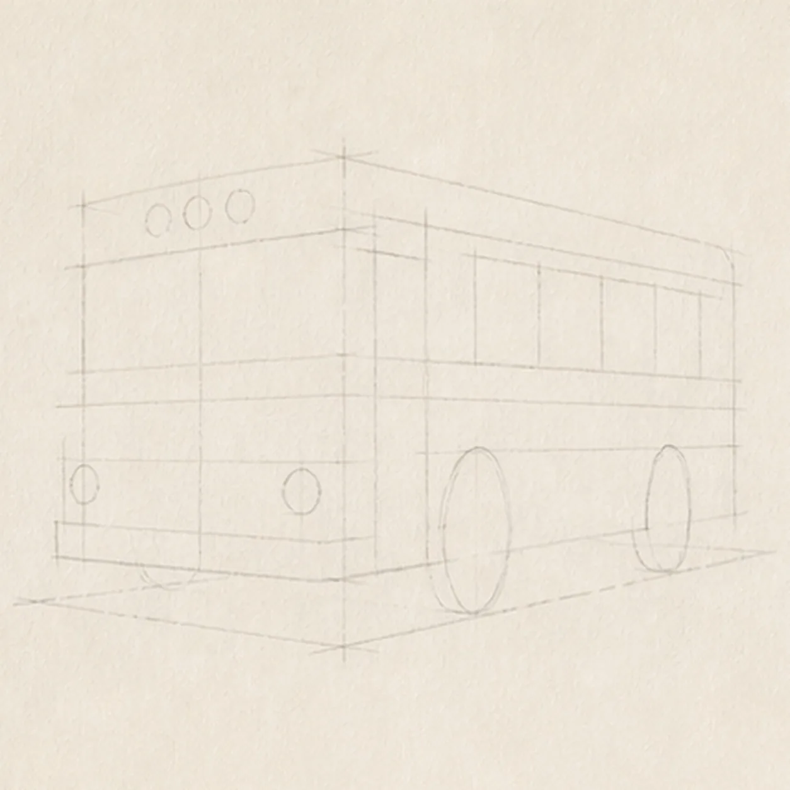
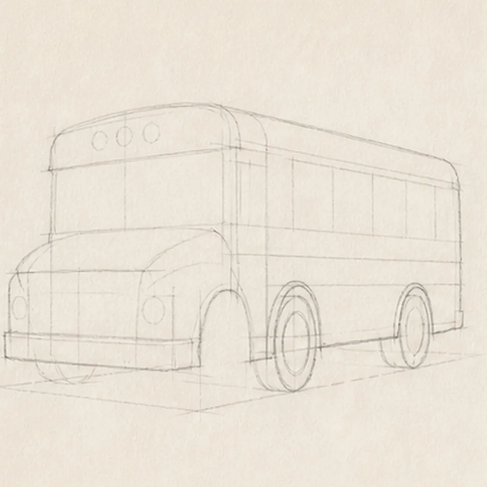
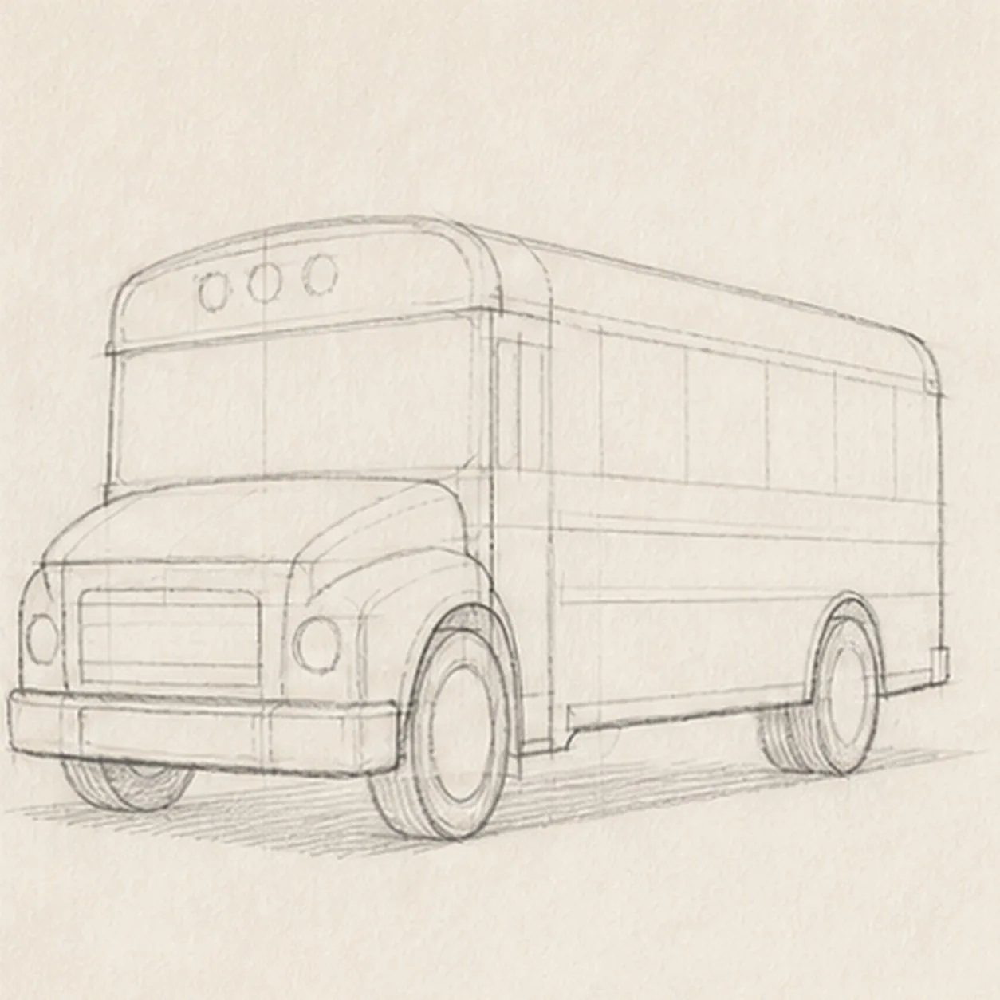
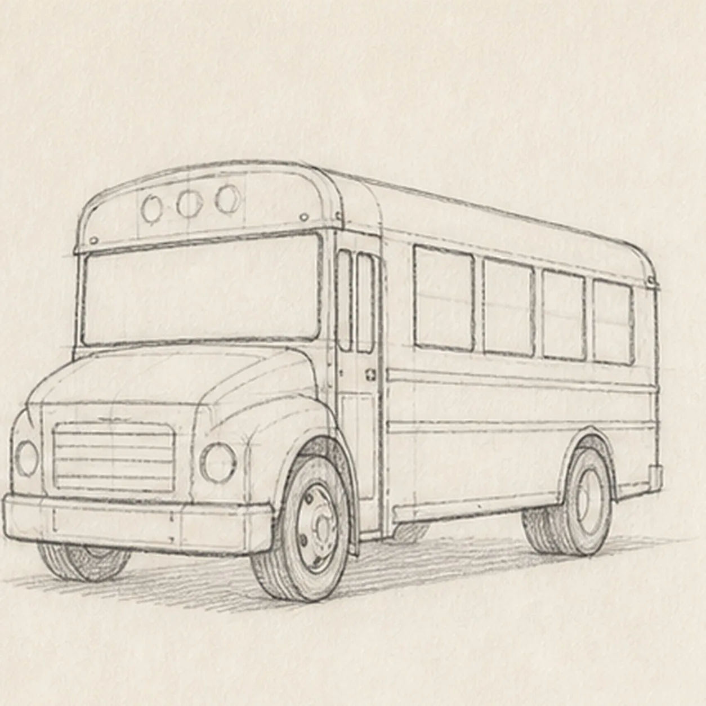
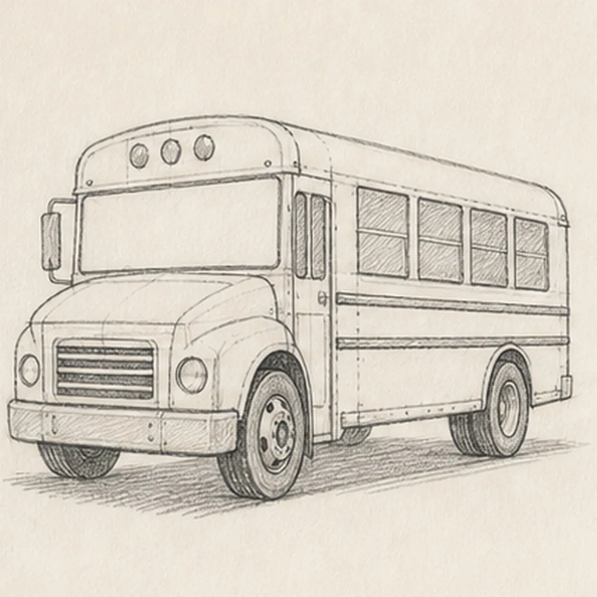
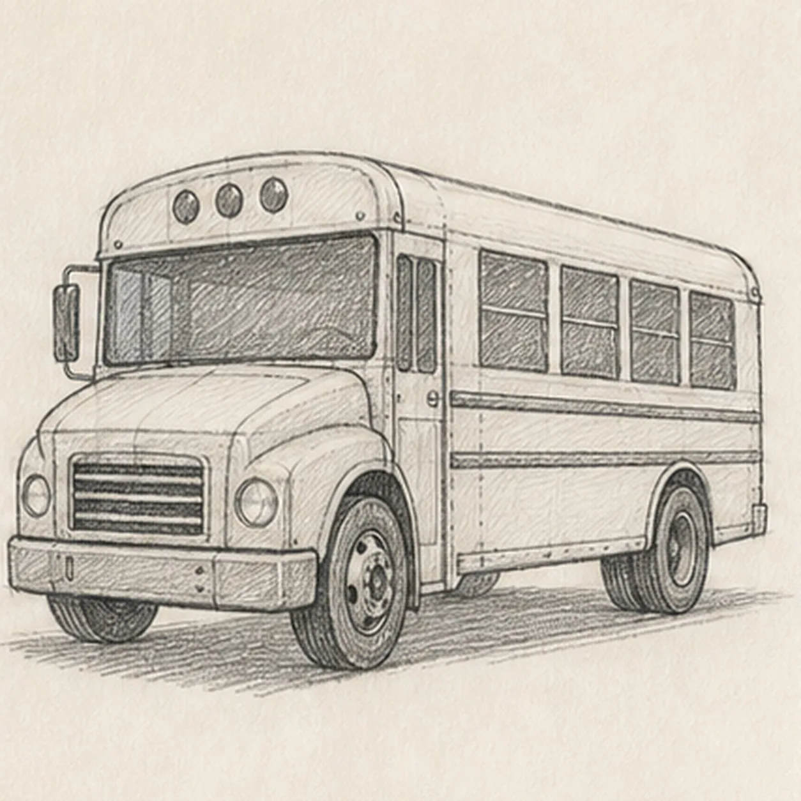
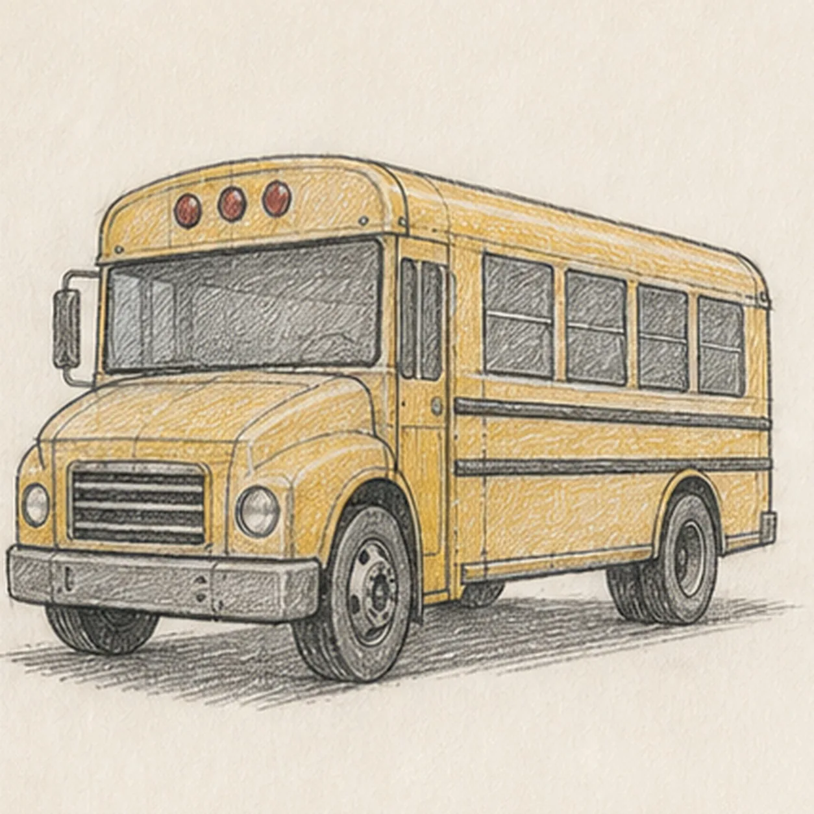

From the archive
Let's draw a school bus in three-quarter view
Treat this as one small practice round: build the subject lightly, notice the shapes, then darken only the lines that help the finished sketch.
-
01

Map the bus perspective
Use pale graphite to place one front-left three-quarter body box, the roof and belt lines, two wheel ellipses, one windshield reserve, one door-window reserve, exactly four side-window reserves, two headlight centers, three roof-lamp centers, one mirror axis, two safety-band routes, a ground line, and a broken shadow footprint.
Sketch tip: Ghost the long roof and lower body edges from the shoulder, then aim both toward the same shallow vanishing direction. Compare the two wheel ellipses and the empty spaces around all four side windows before darkening anything.
-
02

Wrap the bus shell
Build one loose bus silhouette with the short hood, raised roof, long passenger side, two wheel wells, and two visible wheel rings while preserving every pale glazing, hardware, and shadow reserve.
Sketch tip: Draw the roof and lower side in long relaxed passes, then rotate the page for the wheel arches. Keep the front box wider than the receding rear so the three-quarter view reads without extreme distortion.
-
03

Refine the body planes
Clarify the broad front face, long side panel, roof edge, bumper and grille footprint, both wheel wells, and lower body edge without adding glass, hardware detail, value, or color.
Sketch tip: Use the hood corners and front wheel as anchors, then check the narrow side plane above the rear wheel. Simplify the body into a few large arcs and straight runs instead of tracing every small wobble.
-
04

Fit the glass and front hardware
Add one broad front windshield, one folding entry-door window, exactly four receding side passenger windows, two headlights, three roof lamps, the front grille, bumper, and two horizontal safety bands on the reserved routes.
Sketch tip: Place the windshield first, then step the four side windows smaller as they recede. Keep each dark frame aimed with the roof line, and stop both safety bands cleanly at the wheel wells instead of drawing through them.
-
05

Finish the rolling hardware
Add simple hubs and tread accents to both wheels, one side mirror, the door and panel seams, and the reserved broken shadow without changing the glass or front hardware.
Sketch tip: Build each hub from the same ellipse center used in the wheel guide. Trace the mirror arm back to the windshield edge, then break the shadow at both tire contact patches so the bus feels planted rather than pasted onto a dark oval.
-
06

Build the graphite value
Layer directional graphite over the established body planes, glass, tires, grille, hardware, and shadow while preserving every window, lamp, mirror, band, and open-paper highlight.
Sketch tip: Use the side of the 2B pencil for broad glass and shadow value, then switch to the point for the grille and tread. Pull hatching along each body plane and keep the windshield darker than the yellow-painted panels.
-
07

Layer the bus color
Glaze school-bus yellow over the established body, muted red over the three roof lamps, and cool gray over the glass, grille, wheels, and shadow without hiding the graphite grain.
Sketch tip: Build two light colored-pencil passes that follow the bus length instead of one waxy coat. Leave narrow paper gaps along the roof and hood, and let the graphite remain the darkest material in the windows, tires, and grille.
-
08
![Handmade graphite and restrained colored-pencil sketch of one generic face-free school bus in a front-left three-quarter view with one broad dark windshield, one folding entry-door window, exactly four receding side passenger windows, exactly two visible wheels, two headlights, exactly three muted-red roof marker lamps, one side mirror, two dark horizontal safety bands, one simple front grille and bumper, several small panel seams, tactile directional hatching, school-bus-yellow body color, cool-gray glass and wheel values, open paper highlights, and one broken graphite ground shadow](../assets/school-bus-three-quarter-view-finished-v1.webp)
Send the school bus rolling
Strengthen selected established contours, deepen the same graphite and colored-pencil values, clarify existing paper highlights, and soften only the pale construction guides that distract.
Sketch tip: Count one windshield, one door window, four side windows, two wheels, two headlights, three roof lamps, one mirror, and two safety bands, then stop while the paper tooth still shows. Change the bus color in your own version if you like, but keep the same perspective and spacing method.
![Handmade graphite and restrained colored-pencil sketch of one left-facing muted-ochre seahorse with one horse-like head and long snout, one three-point crown ridge, one visible eye, one arched neck and rounded belly, one tapering clockwise-curled tail wrapped exactly once around one teal-green eelgrass stem, one ribbed dorsal fin, exactly two small side fins, exactly seven curved torso plates, exactly five narrow eelgrass leaves, exactly two pale-blue bubbles, exactly two open-paper highlights, visible paper tooth, and one broken cool-gray ground shadow](../assets/seahorse-curled-around-eelgrass-finished-v1.webp)